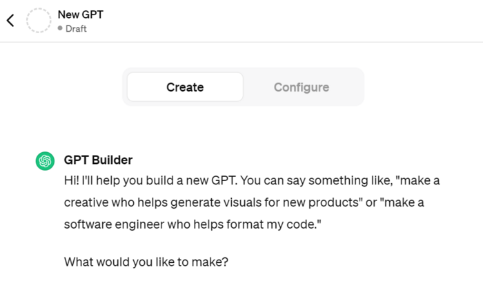
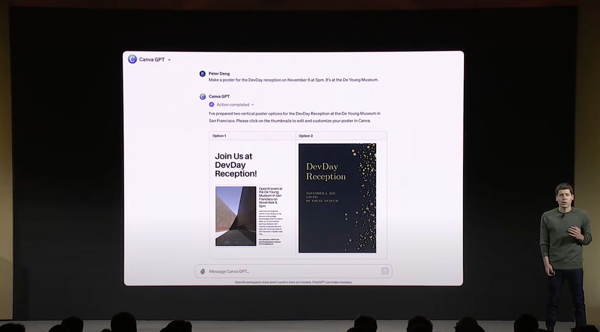
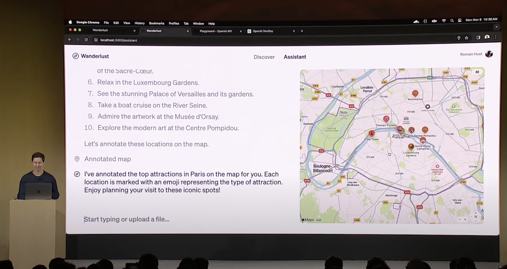

Open AI DevDay Keynote
- 시행 일시: 2023.11.07
- Open AI가 실시한 첫 개발자 컨퍼런스
OpenAI가 새롭게 발표한 기능 정리
- GPT Builder: 대화형 챗봇 개발 환경

- 챗봇 사용 목적 등을 설명해주고, 추가 자료(pdf, img 등) 입력하면 맞춤형 챗봇 개발 가능
- GPT Store 이용해 GPT Builder로 개발된 챗봇 공유 및 사용 가능
- GPT Store 사이트 링크: https://gptbuilderstore.com/ (11월 말 런칭 예정)
- GPT Store 사이트 링크: https://gptbuilderstore.com/ (11월 말 런칭 예정)
- 챗봇 사용 목적 등을 설명해주고, 추가 자료(pdf, img 등) 입력하면 맞춤형 챗봇 개발 가능
- API 개선
- Assistants API
- Blackbox 해소 위해 Code interpreter, 답 제공 시 사용된 주요 parameter 제공
- JSON 모드 추가
- JSON 타입으로 답변
- SEED 값 세팅 가능
- Log Probability 제공
- Assistants API
- GPT-4 Turbo 출시
- Context Length 증가
- 32K → 128K
- More user control
- 답변의 형식 지정 가능
- 여러 함수 한 번에 처리 가능
- 외부 문서, 정보 학습시켜서 사용 가능
- New modalities
- Vision, Speech 가능
- Data Update
- 2023년 4월 정보까지 학습됨
- 2023년 4월 정보까지 학습됨
- Context Length 증가
느낀점..
컨퍼런스 영상을 시청하며, 아래의 두 장면이 가장 기억에 남았다.


이제 인공지능이 음성명령만으로 중요한 정보를 담아 포스터를 만들어주고, 인공지능을 간편하게 커스텀하여 여행 가이드로 사용할 수 있는 시대가 되었다.
이 장면들을 보며, 전 세계 사람들이 각자만의 아이디어로 커스텀한 인공지능을 공유한다면, 어떤 획기적인 인공지능 서비스가 탄생할지 11월 말이 기대가 되었다.
그러나, 데이터 사이언티스트를 꿈꾸며 인공지능을 공부하는 학생으로서, 다소 우려가 되기도 하였다. 기존에는 인공지능을 활용해 서비스를 런칭할 때, 데이터를 수집하고, 정제하여, 코드로 fine-tuning하는 작업을 거쳐야했다. 그러나 이제는 코드 없이 음성명령만으로 간편하게 모델을 커스텀하는 것이 가능해졌다. 다시 말해, 인공지능 개발자나 데이터 사이언티스트가 아닌 일반인들도 단순히 인공지능 서비스를 소비하는 것을 넘어 인공지능을 활용할 수 있게 되었다. 이러한 상황에서 데이터 사이언티스트의 역할과 데이터 사이언티스트가 지녀야 할 소양이 무엇일지에 대한 고민을 해보게 되었다.
추가적으로, 음성명령만으로 인공지능에게 입금을 하도록 하는 시연을 보며, 인공지능이 검색 엔진, 금융 시스템, 사내 데이터베이스 등과 결합된다면 훨씬 더 편리하고 효율적인 일상이 되겠다는 상상을 할 수 있었다. 다만, 이를 위해서는 개인정보 보호 문제, 저작권 문제 등이 먼저 해결되어야 하는 만큼, 기술적으로는 개인정보를 보호할 수 있는 방법에 대한 연구, 윤리적으로는 개인정보 및 저작물 활용에 대한 논의가 우선적으로 필요할 것으로 보인다.